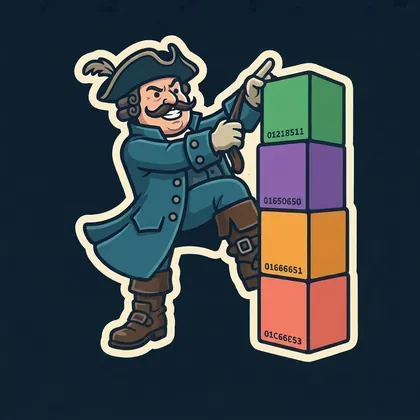

hex-to-compiler project
16進で手書きした機械語から出発して、言語処理系をブートストラップするプロジェクトです。各ステージは前のステージが作った成果物だけを使い、外部のアセンブラ・コンパイラ・ランタイム・コード生成器を使いません。
ブートストラップのステージ

色は各成果物を書いている言語です。各ステージのつくりは機械語から planck0 までにあります。
planck の言語の定義は planck/SPEC.rst です。
16進で手書きした機械語から出発して、言語処理系をブートストラップするプロジェクトです。各ステージは前のステージが作った成果物だけを使い、外部のアセンブラ・コンパイラ・ランタイム・コード生成器を使いません。

色は各成果物を書いている言語です。各ステージのつくりは機械語から planck0 までにあります。
planck の言語の定義は planck/SPEC.rst です。